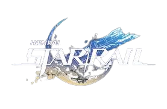

| Contenido |
|---|
Honkai Star Rail se sitúa en un vasto universo donde la realidad está moldeada por fuerzas cósmicas y entidades poderosas conocidas como Eones. Estos seres tienen la capacidad de crear y destruir mundos, dejando una marca indeleble en la estructura misma del cosmos. En este escenario, la humanidad y otras civilizaciones luchan por sobrevivir y prosperar frente a la amenaza constante del Honkai, una fuerza misteriosa y destructiva que corrompe y devasta todo a su paso.
El jugador encarna al Trazacaminos, un viajero interestelar que despierta sin recuerdos a bordo del tren espacial llamado Star Rail. Este tren no es un medio de transporte común, sino una nave capaz de atravesar galaxias y dimensiones, conectando mundos distantes y permitiendo la exploración de territorios desconocidos.
Desde el inicio, el Trazacaminos se embarca en una misión para descubrir su identidad y el propósito de su viaje. A medida que avanza, se encuentra con una tripulación diversa, compuesta por personajes con habilidades únicas y trasfondos complejos. Cada miembro del equipo aporta su propia perspectiva sobre el universo, el Honkai y la lucha que enfrentan.
El tren Star Rail recorre diferentes planetas y sistemas estelares, cada uno con su propia cultura, historia y desafíos. Estos mundos están afectados de diversas maneras por el Honkai, y en muchos casos, la corrupción y el caos han dejado cicatrices profundas en sus habitantes y ecosistemas.
| Personaje | Historia |
|---|---|
| Seele | Seele es un personaje con una dualidad interna marcada por su conexión con el Honkai, una fuerza destructiva. Posee dos personalidades: una inocente y otra oscura llamada Seele Vollerei. Su historia gira en torno a la lucha por controlar esta dualidad y encontrar su verdadera identidad. Se une al Trazacaminos para ayudar a enfrentar las amenazas del Honkai, mientras busca reconciliar sus dos partes y proteger a sus compañeros. Su evolución es un viaje de autoaceptación y esperanza. |
| Castorice | Castorice es un personaje de Honkai Star Rail originario de Aidonia, una nación que venera a la Muerte y donde la nieve cae constantemente. Su historia está envuelta en misterio y melancolía, reflejando la atmósfera fría y tranquila de su tierra natal. Castorice representa la conexión con la muerte y el descanso eterno, y su papel en la historia gira en torno a esta temática, aportando un aura de calma y solemnidad al viaje del Trazacaminos. |
| Cyrene | Cyrene es un personaje de Honkai Star Rail con una historia trágica y profunda. Su pasado está marcado por eventos dolorosos que la han llevado a una lucha constante por sobrevivir y proteger a quienes le importan. Cyrene está vinculada a otros personajes clave y su historia explora temas de sacrificio, redención y la búsqueda de esperanza en medio de la adversidad. Su presencia en la narrativa aporta un matiz emocional importante al viaje del Trazacaminos. |
| Evernight | Evernight (Larganoche) es un personaje misterioso en Honkai Star Rail, vinculado a la Zona de los Recuerdos, un lugar aislado donde el pasado se refleja a través de velas que poco a poco se extinguen. Su historia está ligada a eventos oscuros y secretos profundos, y representa una sombra que guarda recuerdos y conflictos del pasado. Everknight es una figura enigmática que encarna el misterio y la conexión con memorias olvidadas, aportando un aura de intriga y profundidad a la narrativa del juego. |
| Hyacyne | Hyacine es una descendiente de la gente del cielo y la sanadora del Patio Claroscuro en Honkai Star Rail. Posee una bestia alada llamada Ica y tiene la responsabilidad de proteger y sanar, heredando la voluntad de sus ancestros. Su historia está ligada a la preservación y restauración del equilibrio en su mundo, aportando esperanza y apoyo vital al Trazacaminos y su equipo durante su viaje. |
| Dan Heng - Imbibitor Lunae | Dan Heng es el Gran Maestro del Luofu y portador del legado del Dragón Azul. En su rol como Imbibitor Lunae, tiene la responsabilidad de enviar nubes de lluvia y vigilar el inmortal Árbol de la Ambrosía, un símbolo vital para su mundo. Es un joven reservado y distante que guarda secretos profundos sobre su pasado. Decidió unirse al Expreso Astral para escapar de las ataduras familiares y encontrar su propio camino, rechazando el papel tradicional que se esperaba de él como Imbibitor Lunae. Su historia está marcada por la lucha entre cumplir con su destino y buscar su libertad personal. |